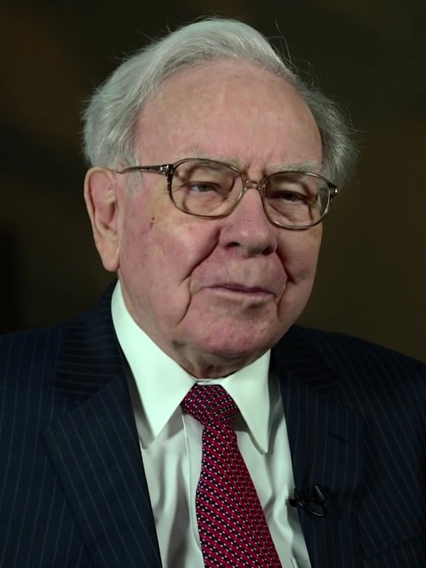
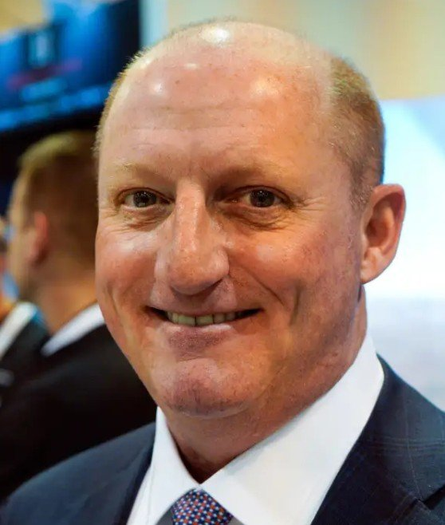

ACC250: Intro to Financial Accounting
Accounting in the News: Berkshire Buybacks
Jaeyoon Yu, Ph.D.
Central Michigan University


Photos via Wikimedia Commons.
Q3 2026 (reported Nov 7, 2026)
| Item | Amount | Change |
|---|---|---|
| Revenue | $105.6B | +11% |
| Operating earnings | $12.7B | −6% |
| Cash on hand | $377.4B | +3% vs Q2 |
| Stock buybacks | $9.6B | Q2: $4.5B |
EX. Net income $100; the company buys back 10 of its 100 shares.
| Before | After | |
|---|---|---|
| Net income | $100 | $100 |
| Shares outstanding | 100 | 90 |
| EPS = NI ÷ shares outstanding | $1.00 | $1.11 |
EX. Berkshire buys back $9.6B of its own stock.
| Buyback price | Remaining shareholders |
|---|---|
| Below value | Gain: $1 of value bought for less than $1 |
| Above value | Lose: the company overpaid for its own shares |
Operating earnings: $12.7B, down 5.8% from $13.5B a year earlier. The EPS example uses made-up numbers.